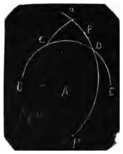

Book III: Multiplication & Division of Straight Distances¶
Libro Terzo: Della moltiplicazione e divisione delle distanze in linea retta (§§ 64–70)
§§ 64–65: Collinear Doubling & Integer Multiples
[Physical lacuna in the digitized 1901 witness: the opening of Book Three and §§ 64–65 stood on printed p. 31, which is absent from the digitized Harvard copy between folios 0056 and 0057. For the mathematical reconstruction, see the Summary and Notes tracks.]

§ 66: Segment Bisection Without Straightedge
[The text resumes on p. 32 following the lacuna of pp. 28–31.]
§ 67: Repeated Binary Subdivision
67. Prob. To continue subdividing into two equal parts by the simplest construction (fig. 18), \(AM\) at \(N\), \(AN\) at \(O\), etc., to infinity.
§ 68: Exact Distance Trisection
68. Prob. To divide the distance \(AB\) into three equal parts.
§§ 69–70: Division into Any Number of Equal Parts
69. Prob. To divide a distance \(AB\) into any number of equal parts.